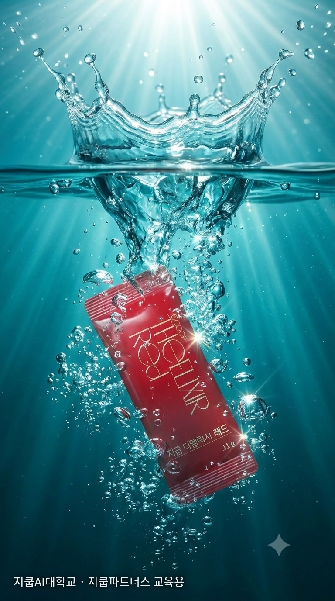

오늘의 프롬프트AI로사쌤 · 10번
꽃이 피며 나타나는 제품 광고 영상
제품 사진 한 장으로 광고 사진을 만들고, 그 사진으로 영상까지 만드는 두 단계예요. 어떤 제품이든 쓸 수 있어요.
1단계광고 사진 만들기

제미나이나 챗GPT에 내 제품 사진을 먼저 올리고, 아래 프롬프트를 붙여넣으세요.
업로드한 이미지 속 제품을 사용한 실사 고급 광고 사진. 제품은 형태, 비율, 색상, 라벨 디자인, 인쇄된 글자를 바꾸지 말고 다시 디자인하지 말 것.
장면: 사람 키만큼 커다란 꽃봉오리가 화면 중앙에 닫힌 채 서 있고, 겹겹이 포개진 꽃잎 틈 사이로 안쪽에서 따뜻한 빛이 새어 나옴. 꽃잎 틈 사이로 안에 놓인 제품의 윗부분이 살짝 엿보임. 꽃잎에는 이슬방울이 맺혀 있고, 주변에는 작은 꽃봉오리들과 초록 잎, 옅은 아침 안개.
조명과 구도: 어둑한 새벽 정원 배경, 꽃 안쪽에서 번지는 금빛 빛과 꽃잎 가장자리의 은은한 역광, 정면 눈높이의 클로즈업.
고해상도 4K 실사, 꽃잎의 결과 잎맥·이슬방울까지 선명하게, 사람과 손은 나오지 않음, 제품에 원래 있는 글자 외에는 글자·로고·워터마크 없음, 세로 9:16.
2단계광고 영상 만들기
1단계에서 만든 사진을 영상 도구에 첫 장면으로 올리고, 아래 프롬프트를 붙여넣으세요.
첫 프레임의 제품 형태, 색, 라벨, 인쇄된 글자를 끝까지 그대로 유지하고 일그러지거나 바뀌지 않게. 사람과 손은 나오지 않음.
0~3초: 꽃봉오리가 숨 쉬듯 미세하게 떨리고 꽃잎 틈에서 새어 나오는 빛이 점점 밝아짐. 이슬방울 하나가 꽃잎을 타고 굴러떨어짐.
3~7초: 꽃잎이 바깥쪽부터 한 겹씩 부드럽게 열리며 활짝 피어나고, 꽃 한가운데에 똑바로 선 제품이 서서히 드러남. 꽃가루 같은 금빛 입자가 공중에 피어오름.
7~10초: 꽃이 완전히 피어 제품을 꽃잎이 받치고 있는 모습이 되고, 주변의 작은 꽃봉오리들도 잇따라 피어남. 아침 햇살이 번지며 카메라가 천천히 줌 인해 라벨을 또렷하게 보여주고 마무리.
소리: 고요한 새벽 공기, 꽃잎이 사르르 열리는 부드러운 소리, 맑은 하프 선율과 새소리. 사람 목소리 없음.
4K 고해상도 실사 영상, 10초 원테이크, 꽃이 피는 움직임은 자연스럽고 우아하게, 화면에 자막이나 새로운 글자·로고 없음.
출처 · AI로사쌤